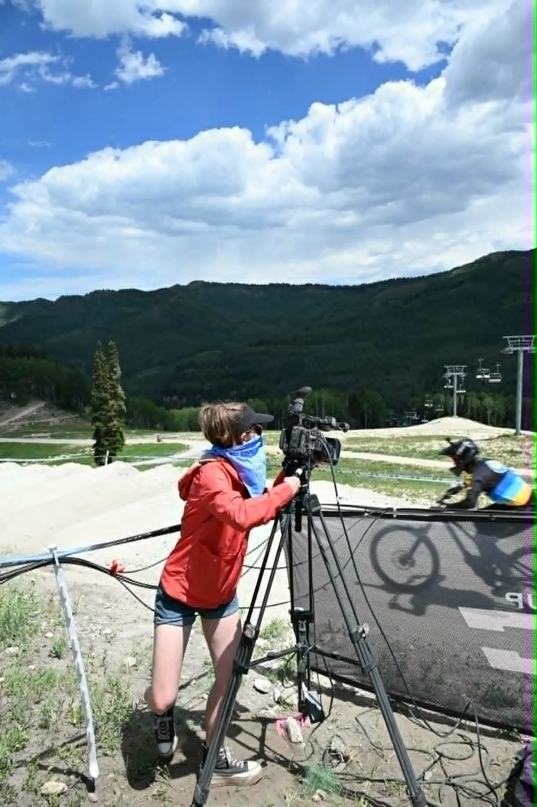

Multi-Camera Coverage
Trackside, paddock, start/finish, handheld, POV, and specialty camera workflows scaled to the venue.
Motorsports broadcast production
Down The Wire Productions supports motorsports, drifting, racing, and action-sports events with multi-camera live production, replay, graphics, commentary, streaming, venue screens, and field infrastructure.

Built for speed
Motorsports broadcasts need clear race storytelling, reliable communications, fast replay, accurate graphics, and camera positions that make the competition understandable to viewers.
Trackside, paddock, start/finish, handheld, POV, and specialty camera workflows scaled to the venue.
Fast-turn replay, results, sponsor inventory, lower thirds, and commentary support.
Streaming, recording, venue screens, and feeds prepared for online audiences and event partners.
Related services
Pair motorsports coverage with our event crews, replay and field infrastructure, or broadcast rental packages.